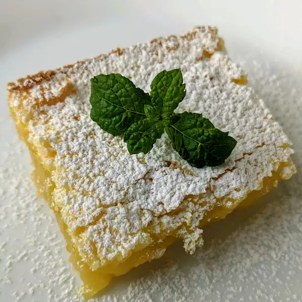

Lemon Bars

This is one of my favorite cookies of all time, although technically they're closer to a pie than a cookie.
Nothing prepares you for that intense, awesome sweet-tart lemon flavor and custard, perfectly contrasted against
that crisp, sweet buttery shortbread cookie. - Chef John, Food Wishes
Ingredients
Shortbread Crust
- 1 cup all-purpose flour
- 1/2 cup unsalted butter, room temperature
- 1/4 cup confectioner's sugar
- 1/4 teaspoon vanilla extract
- 1/4 teaspoon salt
Lemon Custard
- 2 large eggs
- 1 large egg yolk
- 1 cup white sugar
- 2 tablespoons all-purpose flour
- 1/4 cup freshly squeezed lemon juice
- 1 tablespoon freshly grated lemon zest
- 1 teaspoon confectioner's sugar
Directions
- Place an oven rack into middle position in oven and preheat oven to 350 degrees F
(175 degrees C). Lightly oil an 8x8-inch baking dish.
- Place 1 cup flour and butter in a mixing bowl and mash with the back of a spatula
or wooden spoon until thoroughly combined. Mix in 1/4 cup confectioners' sugar,
vanilla extract, and salt; mash mixture together until mixture looks like a
slightly crumbly cookie dough.
- Moisten your fingers with a little water and press dough into bottom of prepared
baking dish. Use a fork to prick holes all over the crust.
- Bake crust on center rack in the preheated oven until crust edges are barely
golden brown, 22 minutes.
- Beat eggs and egg yolks together in a bowl; whisk in white sugar and 2 tablespoons
flour until smooth. Add lemon juice and lemon zest; whisk for 2 minutes. Pour
lemon custard over crust.
- Bake on center rack until custard is set and top has a thin white sugary crust, 25
minutes. Let cool completely before cutting into bars. Dip knife into very hot water,
run around the edge, and cut into 16 squares. Dust cookies with 1 teaspoon
confectioners' sugar.
Cook's Note
To add a meringue topping, whisk 1 egg white in a bowl until it forms a ribbon, add 1
tablespoon of white sugar, and whisk until mixture holds soft peaks. Spoon meringue
into a resealable plastic bag, cut a corner off the bag, and squeeze meringue on top
of cut bars in a decorative pattern. Brown meringue lightly with a kitchen torch.